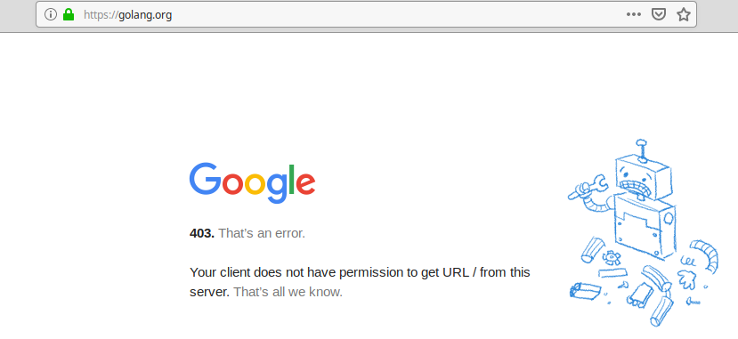

Some packages and tools related to Go programming cannot be downloaded from Cuba, due some restrictions Google applies. The savior for such cases turns out to be Tor Browser, with a little addition.
These restrictions hit your face when you do something like:
git clone git@github.com:lamg/proxy.git
cd proxy/cmd/proxy
go install
since that project has dependencies hosted at the official Go site, blocked from Cuba, which are golang.org/x/net and golang.org/x/text.
In this case, it is easy to download them manually from https://github.com/golang/net and https://github.com/golang/text respectively, and to put them under golang.org/x at the GOPATH. But is better to let the go command do that work for you, and it can be done if you replace the last command at the previous script by https_proxy=http://localhost:8080 go install.
This, of course, will not work right now since there’s no such HTTP proxy tunneling requests made by the go command through another country, with access to Go, at localhost:8080; which is what that line should do. For achieving that download and run Tor Browser, followed by proxy -p socks5://localhost:9150 -f. However, the latter will not work right now, since you need the proxy command available. You can do that downloading the binary from releases, and placing it in your PATH. Currently you will find there only the Linux AMD64 binary, due to rational lazyness.